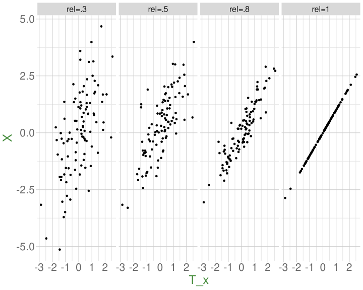
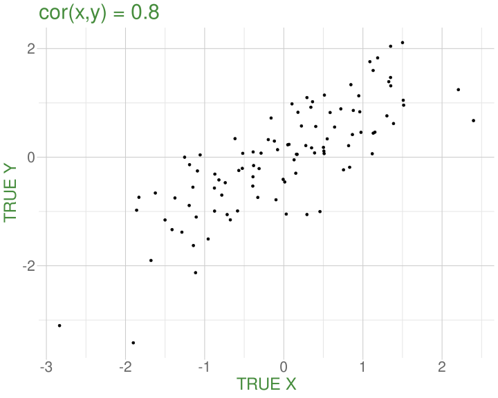
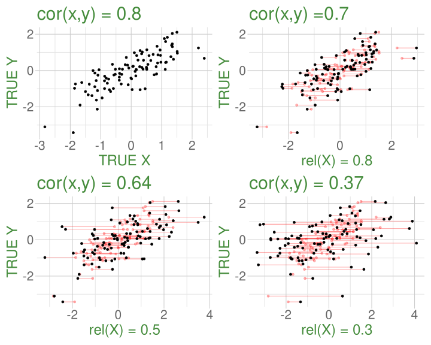
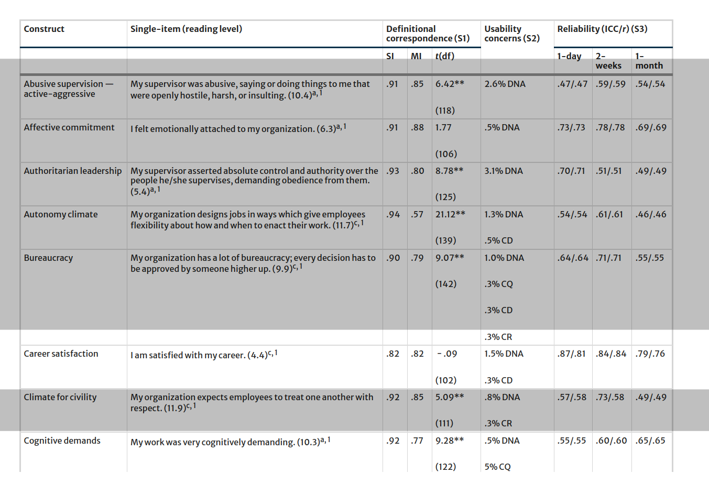

eg_data <- eg_data |> select(-item_5)Factor Analysis 2
Data Analysis for Psychology in R 3
Josiah King & John Martindale
Psychology, PPLS
University of Edinburgh
Course Overview
|
multilevel modelling working with group structured data |
regression refresher |
| introducing multilevel models | |
| more complex groupings | |
| centering, assumptions, and diagnostics | |
| recap | |
|
factor analysis working with multi-item measures |
what is a psychometric test? |
| using composite scores to simplify data (PCA) | |
| uncovering underlying constructs (EFA) | |
| more EFA | |
| recap |
This week
- Evaluating Factor Solutions
- Replicability & Factor Congruence
- Back to Scoring
- Returning to Reliability
- Where do we go from here?
Doing EFA - Overview
- Check the appropriateness of the data and decide of the appropriate estimator.
- Assess range of number of factors to consider.
- Decide conceptually whether to apply rotation and how to do so.
- Decide on the criteria to assess and modify a solution.
- Fit the factor model(s) for each number of factors
- Evaluate the solution(s) (apply 4)
- if developing a measurement scale, consider whether to drop items and start over
- Select a final solution and interpret the model, labeling the factors.
- Report your results.
Evaluating factor solutions
where to start
- variance accounted for
- in total (field dependent)
- each factor (relative to one another)
- salient loadings
- meaning of factors is based on size and sign of ‘salient’ loadings
- we decide what is ‘salient’
- in most research this is \(\ge |.3| or |.4|\)
- Each factor has \(\geq 3\) salient loadings (ideally \(\geq 3\) primary loadings)
- if not, may have extracted too many factors
looking for trouble
- Items with no salient loadings?
- maybe a problem item, which should be removed
- maybe signal presence of another factor
- Items with multiple salient loadings (cross-loadings)?
- look at item complexity values.
- makes defining the factors more difficult
- Heywood cases
- factor loadings \(\geq |1|\)
- communalities \(\geq |1|\)
- something is wrong; we do not trust these results
- Try different rotation, estimation method, eliminate items, rethink if FA is what you actually want to do
Good list of criteria
how much variance is accounted for by a solution?
do all factors load on 3+ items at a salient level?
do all items have at least one loading at a salient level?
are there any highly complex items?
are there any “Heywood cases” (communalities or standardised loadings that are >1)?
is the factor structure (items that load on to each factor) coherent, and does it make theoretical sense?
cautions!
Remember: If we choose to delete one or more items, we must start back at the beginning, and go back to determining how many factors to extract
Very Important: If one or more factors don’t make sense, then either the items are bad, the theory is bad, the analysis is bad, or all three are bad!
💩 The “garbage in garbage out” principle always applies
- PCA and factor analysis cannot turn bad data into good data
Last weeks example
Factor Analysis using method = ml
Call: fa(r = eg_data, nfactors = 2, rotate = "oblimin", fm = "ml")
Standardized loadings (pattern matrix) based upon correlation matrix
ML1 ML2 h2 u2 com
item_1 0.00 -0.59 0.35 0.65 1
item_2 0.02 0.68 0.46 0.54 1
item_3 0.03 0.79 0.62 0.38 1
item_4 -0.08 0.61 0.38 0.62 1
item_6 -0.69 -0.03 0.48 0.52 1
item_7 0.81 0.01 0.65 0.35 1
item_8 0.74 0.05 0.55 0.45 1
item_9 0.74 -0.09 0.56 0.44 1
ML1 ML2
SS loadings 2.23 1.82
Proportion Var 0.28 0.23
Cumulative Var 0.28 0.51
Proportion Explained 0.55 0.45
Cumulative Proportion 0.55 1.00
With factor correlations of
ML1 ML2
ML1 1.00 -0.01
ML2 -0.01 1.00
Mean item complexity = 1
Test of the hypothesis that 2 factors are sufficient.
df null model = 28 with the objective function = 2.47 with Chi Square = 977
df of the model are 13 and the objective function was 0.04
The root mean square of the residuals (RMSR) is 0.02
The df corrected root mean square of the residuals is 0.03
The harmonic n.obs is 400 with the empirical chi square 6.82 with prob < 0.91
The total n.obs was 400 with Likelihood Chi Square = 14.7 with prob < 0.33
Tucker Lewis Index of factoring reliability = 0.996
RMSEA index = 0.018 and the 90 % confidence intervals are 0 0.054
BIC = -63.2
Fit based upon off diagonal values = 1
Measures of factor score adequacy
ML1 ML2
Correlation of (regression) scores with factors 0.92 0.89
Multiple R square of scores with factors 0.84 0.79
Minimum correlation of possible factor scores 0.68 0.57Factor Analysis using method = ml
Call: fa(r = eg_data, nfactors = 3, rotate = "oblimin", fm = "ml")
Standardized loadings (pattern matrix) based upon correlation matrix
ML2 ML3 ML1 h2 u2 com
item_1 -0.59 -0.03 0.02 0.35 0.650 1.0
item_2 0.68 0.07 -0.05 0.47 0.534 1.0
item_3 0.78 0.01 0.02 0.62 0.385 1.0
item_4 0.61 -0.13 0.07 0.39 0.613 1.1
item_6 -0.03 -0.58 -0.12 0.45 0.550 1.1
item_7 0.02 0.90 -0.05 0.76 0.238 1.0
item_8 0.01 0.01 0.99 1.00 0.005 1.0
item_9 -0.09 0.57 0.18 0.51 0.491 1.2
ML2 ML3 ML1
SS loadings 1.81 1.60 1.12
Proportion Var 0.23 0.20 0.14
Cumulative Var 0.23 0.43 0.57
Proportion Explained 0.40 0.35 0.25
Cumulative Proportion 0.40 0.75 1.00
With factor correlations of
ML2 ML3 ML1
ML2 1.00 -0.02 0.03
ML3 -0.02 1.00 0.68
ML1 0.03 0.68 1.00
Mean item complexity = 1.1
Test of the hypothesis that 3 factors are sufficient.
df null model = 28 with the objective function = 2.47 with Chi Square = 977
df of the model are 7 and the objective function was 0.01
The root mean square of the residuals (RMSR) is 0.01
The df corrected root mean square of the residuals is 0.02
The harmonic n.obs is 400 with the empirical chi square 2.81 with prob < 0.9
The total n.obs was 400 with Likelihood Chi Square = 5.35 with prob < 0.62
Tucker Lewis Index of factoring reliability = 1.01
RMSEA index = 0 and the 90 % confidence intervals are 0 0.052
BIC = -36.6
Fit based upon off diagonal values = 1
Measures of factor score adequacy
ML2 ML3 ML1
Correlation of (regression) scores with factors 0.89 0.92 1.00
Multiple R square of scores with factors 0.78 0.85 0.99
Minimum correlation of possible factor scores 0.57 0.70 0.99Replicability & Factor congruence
Dimension reduction in the context of research
sometimes EFA is itself the main aim
- e.g., we’re trying to develop a new measure of [construct], or our research question is about structure of set of items
other times, we want to “do something” with our factors.
Replicability
We’ve developed a questionnaire scale. We should probably test the stability of the factor structure when replicated
Essentially: Do similar factors appear when similar data are collected?
- the Big Five? (some caveats)
- The “positive manifold” of mental abilities
Replicability
We need two samples!
- collect another sample?
- split a big sample into two? (exploratory vs confirmatory)
- Similar to “train” and “test” sets in machine learning
With two samples, we can:
- Compute congruence coefficients between the factors
- Confirmatory factor analysis where you specify what factors load on what items
Congruence Coefficients
- Congruence coefficients are correlations between sets of factor loadings across samples.
\[ r_c = \frac{\Sigma{x_iy_i}}{\sqrt{\sum x_i^2\sum y_i^2}} \]
- To calculate congruence:
- Run the factor model in sample 1.
- Run the factor model in sample 2
- Ensuring the same items are included, same number of factors specified etc.
- Calculate congruence (or use R!)
Congruence Coefficients in R
#drop missing data for ease
bfi <- na.omit(psych::bfi)
# randomly select one half
expl <- slice_sample(bfi, prop = .5)
# select the non-matching cases
conf <- anti_join(bfi, expl)
# run EFA on expl
res1 <- fa(expl[1:25], nfactors = 5, rotate = "oblimin", fm="ml")
# run same analysis on conf
res2 <- fa(conf[1:25], nfactors = 5, rotate = "oblimin", fm="ml")
# calculate the congruence
fa.congruence(res1, res2) ML2 ML5 ML1 ML3 ML4
ML1 0.99 -0.09 0.00 -0.07 -0.06
ML2 0.04 0.97 -0.33 0.07 -0.05
ML3 0.00 0.10 -0.05 0.98 0.13
ML5 0.25 -0.07 0.94 -0.16 0.06
ML4 -0.01 0.13 -0.25 0.04 0.97- Nice properties of the Tucker coefficient:
- It measures similarity independent of the mean size of the loadings.
- It is insensitive to a change in the sign of any pair of loadings.
- MacCallum et al. (1999) suggest the following criteria following Tucker:
| coef value | replicability |
|---|---|
| < 0.68 | terrible |
| 0.68 to 0.82 | poor |
| 0.82 to 0.92 | borderline |
| 0.92 to 0.98 | good |
| 0.98 to 1.00 | excellent |
Confirmatory factor analysis (CFA)
EFA
“what underlying model of latent variables best explains the relations I see in the observed variables?”
CFA
“I think the relations between these observed variables are because of [specific latent variable model]. Does this model hold in my sample?”
Confirmatory factor analysis (CFA)
EFA
“what underlying model of latent variables best explains the relations I see in the observed variables?”
- aim is to find a factor model
- all factors load on all items
- loadings are purely data driven
- rotations push towards simple structures (maximising item loadings on to one of the factors and minimising them on to the other factors)
CFA
“I think the relations between these observed variables are because of [specific latent variable model]. Does this model hold in my sample?”
- aim is to test a hypothesised factor model
- We explicitly state which items relate to which factor
- We can test if the loadings are the same in different samples, groups, across time etc.
EFA diagram

CFA diagram

Back to Scoring
Dimension reduction in the context of research
sometimes EFA is itself the main aim
- e.g., we’re trying to develop a new measure of [construct], or our research question is about structure of set of items
other times, we want to “do something” with our factors.
- is [construct] related to other constructs in ways that you would predict?
- are there differences in [construct] between experimental conditions/over time/etc
so we need variables that represent [construct]
Scoring
item_1 item_2 item_3 item_4 item_6 item_7 item_8 item_9 S.ANX_cog S.ANX_beh
1 5 5 2 4 2 5 2 4 ?? ??
2 7 6 2 3 3 3 2 5 ?? ??
3 7 1 2 2 3 3 3 4 ?? ??
4 6 4 3 4 2 4 2 6 ?? ??
5 7 3 1 1 3 5 4 5 ?? ??
6 4 2 3 3 2 2 1 3 ?? ??
7 4 4 3 2 2 4 4 3 ?? ??
8 7 4 3 7 2 7 6 6 ?? ??
9 3 4 3 6 4 1 1 2 ?? ??
10 7 2 1 1 3 6 4 2 ?? ??
11 7 2 1 1 3 3 1 3 ?? ??
12 4 5 4 3 2 4 4 6 ?? ??
13 7 2 3 4 2 5 4 4 ?? ??
14 7 1 2 4 4 1 1 1 ?? ??
15 4 3 1 5 3 4 3 3 ?? ??Sum scores and Mean scores
take the mean or sum of raw scores on the observed variables which are related to each factor
deciding which are related to which factor might still require EFA
will need to remember to reverse score items with negative loadings
rowMeans()androwSums()
Weighted scores
- take the mean/sum of raw scores on observed variables but weight them according to:
- pre-defined weights from a manual if the scale is already established
- PCA weights
Factor scores
another type of weighted score
combines observed responses, factor loadings, and factor correlations
but factor correlations depend on rotation method used, and there are infinitely many rotations that are numerically equivalent (rotational indeterminacy)
in addition, factor scores have to be estimated (not calculated like in PCA).
which means we also have infinitely many sets of factor scores
Factor score estimation
- There are lots of methods for this…
myfa <- fa(eg_data, nfactors=2, rotate = "oblimin", fm="ml")
factor.scores(eg_data, myfa, method = "Thurstone")
factor.scores(eg_data, myfa, method = "tenBerge")
factor.scores(eg_data, myfa, method = "Bartlett")
factor.scores(eg_data, myfa, method = "Anderson")
factor.scores(eg_data, myfa, method = "Harman") ML1 ML2
[1,] 0.789 0.131
[2,] 0.180 -0.129
[3,] 0.178 -1.077
[4,] 0.923 0.193
[5,] 0.995 -1.286
[6,] -0.232 0.029
[7,] 0.772 0.296
[8,] 2.275 0.531
[9,] -1.361 0.868
[10,] 0.689 -1.373
[11,] -0.347 -1.456
[12,] 1.303 0.931
[13,] 1.145 -0.185
[14,] -1.532 -0.793- In many instances, all methods will produces scores which are closely related.

Factor scores - which to use?
If the construct is going to be used as a dependent variable, use Bartlett
If the construct is going to be used as a predictor, use Thurstone
If the construct is a covariate, less important
Returning to Reliability
Why care?
item_1 item_2 item_3 item_4 item_6 item_7 item_8 item_9 S.ANX_cog S.ANX_beh
1 5 5 2 4 2 5 2 4 ?? ??
2 7 6 2 3 3 3 2 5 ?? ??
3 7 1 2 2 3 3 3 4 ?? ??
4 6 4 3 4 2 4 2 6 ?? ??
5 7 3 1 1 3 5 4 5 ?? ??measurement is the assignment of numerals to objects and events according to rules (Stevens, 1946, p. 677).
when we assign numbers for a underlying construct, we assume those numbers are accurate representations of people’s true score on the construct.
using weights, factor scores etc allow us to get better representations of the construct
- e.g, downweights contributions for those items that are estimated to have high measurement error
It’s always important to understand how (un)reliable our scores are
Reliability
\[ \begin{align*} \rho_{XX'} &= \frac{Var(T_x)}{Var(X)} = \frac{Var(T_x)}{Var(T_x) + Var(e_x)} = 1 - \frac{Var(e_x)}{Var(X)} \\ &X\text{ is observed score on scale }X \\ &T_x\text{ is True scores} \\ &e_x\text{ is error} \end{align*} \]

Reliability
\[ \begin{align*} \rho_{XX'} &= \frac{Var(T_x)}{Var(X)} = \frac{Var(T_x)}{Var(T_x) + Var(e_x)} = 1 - \frac{Var(e_x)}{Var(X)} \\ &X\text{ is observed score on scale }X \\ &T_x\text{ is True scores} \\ &e_x\text{ is error} \end{align*} \]
Week 7
Under certain assumptions (i.e., tests are truly parallel, each item measures construct to same extent) correlations between two parallel tests provide estimate of reliability
Parallel tests can come from several sources
- Time tests were administered (test-retest)
- Multiple raters (inter-rater reliability)
- Items (alternate forms, split-half, internal consistency)
Coefficient alpha (“Cronbach’s alpha”)
\[ \begin{align*} \alpha=\frac{k}{k-1}\left( \frac{\sum\limits_{i\neq}\sum\limits_j\sigma_{ij}}{\sigma^2_X} \right) = \frac{k^2 \,\,\,\overline{\sigma_{ij}}}{\sigma^2_X} \\ k \text{ is the number of items in scale X} \\ \sigma^2_X \text{ is the variance of all items in scale X} \\ \sigma_{ij} \text{ is the covariance between items }i\text{ and }j \\ \end{align*} \]
\[
\begin{align}
&= \frac{\text{average covariance}}{\text{total score variance}}\\
\quad \\
&= \frac{\text{true variance}}{\text{total score variance}} \\
\end{align}
\]
the underlying model being assumed

- unidimensional
- equal loadings
Coefficient alpha (“Cronbach’s alpha”)
Omega
\[ \begin{align*} \omega_{total} = \frac{ \left( \sum\limits_{i=1}^{k}\lambda_i\right)^2 }{ \left(\sum\limits_{i=1}^{k}\lambda_i \right)^2 + \sum\limits_{i=1}^{k}\theta_{ii} } \\ k \text{ is the number of items in scale}\\ \lambda_i \text{ is the factor loading for item }i\\ \theta_{ii}\text{ is the error variance for item }i\\ \end{align*} \]
\[
\small
\begin{align}
&= \frac{\text{factor loadings}^2}{\text{factor loadings}^2 + \text{error}}\\
\quad \\
&= \frac{\text{variance explained by factors}}{\text{variance explained by factors} + \text{error variance}}\\
\quad \\
&= \frac{\text{true variance}}{\text{true variance} + \text{error variance}} \\
\end{align}
\]
the underlying model

- unidimensional\(^*\)
- different loadings
why care?

why care?
why care?
Attenuation due to unreliability
\[ r^*_{xy} = \frac{r_{xy}}{\sqrt{ \rho^2_{0x} \rho^2_{0y}}} \]
- \(r^*_{xy}\) is the correlation between \(x\) and \(y\) after correcting for attenuation
- \(r_{xy}\) is the correlation before correcting for attenuation
- \(\rho^2_{0x}\) is the reliabilty of \(x\)
- \(\rho^2_{0y}\) is the reliabilty of \(y\)
Reliability
Reliability is a property of the sample, not of the scale/measurement tool
Where do we go from here?
it feels like a lot
item_1 item_2 item_3 item_4 item_6 item_7 item_8 item_9 S.ANX_cog S.ANX_beh
1 5 5 2 4 2 5 2 4 ?? ??
2 7 6 2 3 3 3 2 5 ?? ??
3 7 1 2 2 3 3 3 4 ?? ??
4 6 4 3 4 2 4 2 6 ?? ??
5 7 3 1 1 3 5 4 5 ?? ??
6 4 2 3 3 2 2 1 3 ?? ??- all we’re trying to do here is get to the numbers in these columns
- this is all before we’ve even got to the analysis we’re actually interested in!!
Options so far

the devil you know
- really this is all about knowing what goes in the “limitations” section of a paper
- mean/sum scores are transportable across studies (e.g., think clinical cut-offs)
- but equal loadings will hardly ever be a good reflection of the true measurement model
- factor scores are based on weights derived from your sample.
- what about the next datum?
Other things

CFA

Nomological Net

Measurement Invariance

Structural Equation Modelling

Single Item Measures?
- some mult-item measures feel repetitious
- “am I supposed to give different answers to what is essentially the same question?”
- “all the questions are basically the same, so I guess I will just score 4 for everything”
asking the same question repeatedly is no better than asking it once.
Single Item Measures?
Single Item Measures?
Okay for unidimensional, ‘narrow’ constructs
Maybe okay when construct is used as covariate?
Reliability can’t be estimated..
Summary
Measurement is difficult (especially in psych)
For some research, this is front and center - questions are about the quality of our measurement instruments
- underlying dimensionality, validity, measurement invariance
For all research, thinking about measurement is important
- in deriving numerical scores for a construct
- in understanding the reliability of the measurement and the bearing that has on your conclusions